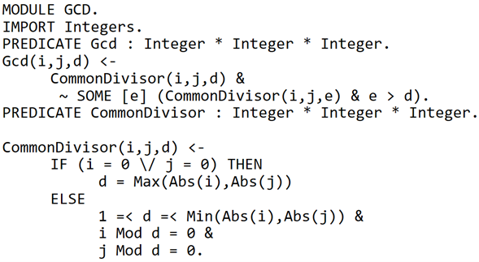

Tarea 10 - Gödel
Paso 1
Los números de Gödel se construyen con referencia a símbolos de cálculo proposicional y la aritmética formal. Cada símbolo se asigna primero a un número natural, por tanto:
Y así para todos los símbolos posibles. La sintaxis del cálculo proposicional asegura que no hay ambigüedad entre el símbolo "P" y el símbolo "+" aunque ambos estén asignados al número 12.
Paso 2
A cada enunciado aritmético se le asigna un número de Gödel único utilizando series de números primos. Se basa básicamente en el siguiente código: 1.er primo carácter × 2º primo carácter × 3.er primo carácter etc.
Por ejemplo el enunciado x, P (x) se convierte en 22 × 316 × 512 × 76 × 1116 × 137, porque {2, 3, 5, 7, 11,...} es la serie de primos, y 2, 16, 12, 6, 16, 7 son los códigos de los caracteres. Este es un número bastante grande, pero perfectamente determinado: 14259844433335185664666562849653536301757812500. Es importante ver que, por el teorema fundamental de la aritmética, este número tan grande se puede descomponer en sus factores primos, y por tanto se puede convertir un número de Gödel en la secuencia de caracteres original.
Paso 3
Finalmente, a las secuencias de enunciados se les asigna un número de Gödel, de manera que la secuencia Enunciado 1 (GN1) Enunciado 2 (GN2) Enunciado 3 (GN3) (donde GN significa número de Gödel)
Tiene el número de Gödel 2GN1×3GN2×5GN3, que denominaremos GN4. La demostración del teorema de incompletitud de Gödel se basa en la demostración de que, en aritmética formal, algunos conjuntos de enunciados prueban otros enunciados de forma lógica. Por ejemplo, se puede probar que la unión de GN1, GN2 y GN3 (es decir GN4) prueban GN5. Como esta es una relación demostrable entre dos números, se le asigna su propio símbolo, por ejemplo R. Entonces se puede escribir R (v, x) para expresar que x demuestra v. En el caso anterior donde x y v son los números de Gödel GN4 y GN5, se podría escribir R(GN5, GN4).
Paradigma
Es un lenguaje de programación declarativo, de propósito general que adhiere al paradigma de la programación lógica. Es un lenguaje fuertemente tipado, con un sistema de tipos basado en many-sorted logic con polimorfismo parametrizado. Se le dio ese nombre en honor al lógico Kurt Gödel.
Ejemplo de código
